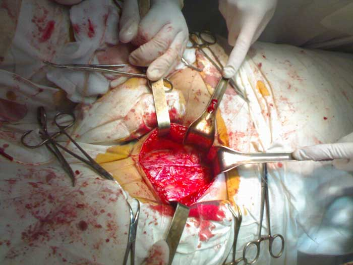
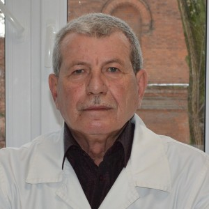

ОТ ЧАСТОГО МОЧЕИСПУСКАНИЯ ДО РАКА ПРОСТАТЫ - ВСЕГО ОДИН ШАГ!" КАК РАСПОЗНАТЬ УГРОЗУ НА РАННЕЙ СТАДИИ? ИНТЕРВЬЮ С ВЕДУЩИМ УРОЛОГОМ ГЕРМАНИИ.
Главный уролог медицинского центра.
Annette Hoffmann
Профессор, доктор медицинских наук, репродуктолог, главный исследователь отделения андрологии Института,член Немецкого, Европейского и Американского общества урологов, а также Американской ассоциации исследований рака (AACR).
.
Опыт работы: более 25 лет
ПЕРВЫЕ ПРИЗНАКИ ПРОСТАТИТА:
- Частое мочеиспускание
-
- Снижение потенции (эректильная дисфункция)
-
- Проблемы с мочеиспусканием
-
- Неприятные ощущения или боль в паху и пояснице
-
На начальной стадии болезнь практически не проявляется, но снижение потенции и проблемы с мочеиспусканием являются первым признаком начинающегося заболевания. Самое главное - не затягивать. Импотенция - самый безобидный результат этого заболевания. Гораздо опаснее образование опухоли - аденома простаты, которая чаще всего приводит к раку простаты.
Поэтому заболевание простатитом несет в себе различные риски для мужчин, основными из которых являются:
ИМПОТЕНЦИЯ - АДЕНОМА ПРОСТАТЫ - РАК ПРОСТАТЫ

Удалена опухоль предстательной железы (65 мм в диаметре) Импотенция возникает в 100% случаев, то есть у всех мужчин, страдающих простатитом. Раньше или позже, но это единственный результат, к которому можно прийти если не лечить простатит.
Рак предстательной железы возникает на поздних стадиях простатита, и это не редкость. Мужчины, которые не лечат простатит и живут с ним, по сути, "играют с огнем". Если вы хотите иметь долгую жизнь и хорошую эрекцию, вам необходимо лечить простатит. И вы должны сделать это как можно скорее.
Проблема в том, что большинство больных мужчин не обращаются за помощью к врачам. Некоторые не думают, что это опасно, а другие считают это постыдным. Наконец, мы имеем ситуацию, когда больные мужчины не обращают внимания на свою болезнь. А если они и обращаются за помощью, то очень часто слишком поздно, когда раковая опухоль уже начала развиваться.
 Операция по удалению раковой опухоли предстательной железы Необходимо понимать, что простатит - это смертельное заболевание. Одна из главных опасностей этого заболевания заключается в том, что оно может перерасти в раковую опухоль. Это, в свою очередь, часто приводит к смерти пациента. Без лечения и контроля болезнь иногда развивается быстро и может привести к раку уже через 1-2 года.
Но теперь у мужчин появилась уникальная возможность избавиться от этого заболевания раз и навсегда, не обращаясь регулярно к врачам.
Дело в том, что в 2020 году появился революционный препарат, который быстро восстанавливает функцию простаты, устраняет воспаление, полностью излечивает простатит, даже если он хронический, а также значительно повышает потенцию и продолжительность полового акта. Препарат называется PX-300. Это очень доступный немецкий препарат, хотя в его разработке принимали участие ученые-медики из Америки и Франции.

В 2022 году в Институте урологии Германии, который является ведущим Европейским научным центром в области урологии, были успешно завершены клинические испытания препарата нового поколения - PX-300 предназначенного для борьбы с простатитом. Пресс-служба центра сообщила следующее:
1. Эффективность PX-300, рассчитанная по стандартной методике (количество выздоровевших пациентов по отношению к общему количеству пациентов в группе из 100 человек, прошедших курс лечения), составляет 98%.
2. Отсутствие проявлений заболевания после отмены препарата (по результатам наблюдений в течение шести месяцев) составило 99%.
3. После ежедневного применения препарата все пациенты отметили значительное повышение либидо и потенции.
4. Препарат способствовал увеличению продолжительности полового акта у 95% пациентов.
5. Нежелательных побочных эффектов, включая аллергические реакции, выявлено не было.
6. Революционный препарат PX-300 признан ведущим средством в борьбе с простатитом.
Комментарии экспертов:
Курт Шуле
Руководитель урологической клиники Мюнхенского университета, профессор, известный уролог.
Опыт работы: более 40 летДо 2020 года в Европе не существовало эффективного и, главное, доступного препарата для лечения простатита, что привело к невероятным последствиям: уровень заболеваемости составил 45% взрослого населения и, что хуже всего, 30% молодых мужчин. PX-300. - это революция в лечении простатита, настоящая панацея. Эффективность капель была доказана на практике в Германии и уже в Европе. Уникальный состав и обнаружение учеными живых клеток сделали PX-300 незаменимым средством для лечения простатита.
Препарат прошел клинические испытания. Полученные результаты стали настоящим сюрпризом для специалистов-урологов. Около 98% всех пациентов выздоровели без рецидивов. А у других симптомы полностью исчезли, и воспалительные процессы в предстательной железе прекратились. Однако среди оставшихся 2% пациентов могли возникать некоторые рецидивы, которые, однако, исчезали при дополнительном применении PX-300.
Кроме того, благодаря сочетанию уникальных компонентов PX-300, значительно повышается потенция и продолжительность полового акта.
PX-300. хорош тем, что решает проблему в комплексе. Он оказывает феноменальное целебное воздействие на всю мочеполовую систему мужчин. Одним словом, после одного курса приема этого препарата мужской организм будет функционировать так, как будто ему 25 лет. Поэтому я рекомендую его всем мужчинам без исключения. А для тех, у кого нет простатита, препарат оказывает мощное профилактическое действие и значительно повышает потенцию.
Помимо Германии, препарат был сертифицирован в Европе в Университете урологии в Париже. Клинические испытания полностью подтвердили испанские данные. Во Франции процент выздоровевших пациентов еще выше.
В настоящее время PX-300 доступен для заказа только на сайте проекта. Мы много раз пытались поставлять наш продукт в аптечные сети, но они хотят установить максимально высокую цену и продавать его в несколько раз дороже, чем мы хотим. Видите ли, Урологический центр, как и Медицинский фонд, является некоммерческой структурой. Наша цель - не зарабатывать деньги. Мы просто хотим обеспечить этим препаратом все население. Поэтому мы продаем его в убыток, компенсируя разницу за счет экспорта. А главная цель аптечных сетей - зарабатывать деньги. Поэтому у нас радикально разные подходы к ценообразованию.


Полностью подтверждаю! Это супер продукт! Я купил его недавно, полтора месяца назад, и с тех пор у меня не было никаких проблем. Простатит полностью исчез, хотя до этого не мог его вылечить, а также значительно улучшилась эрекция и появилось больше желания заниматься сексом. Рекомендую всем, особенно мужчинам старше 40 лет!
Спасибо PX-300.

Ребята, не ждите. Простатит опасен тем, что в хронической форме он может привести к раку предстательной железы. Простатитом болел мой родственник, поэтому, почувствовав симптомы, я сразу же обратилась к врачу. Но я уже год хожу к врачам без всякого эффекта. Я собираюсь попробовать PX-300, без сомнения.

Последние полтора года у меня были боли в простате, я ходил на массаж, принимал таблетки, но боли возвращались. Но PX-300 решил все проблемы всего за две недели, и я действительно забыл о простате, хотя врачи говорили мне, что она хроническая и ничего не поделаешь.

Я начал с известного препарата, принимал его 2 месяца по назначению врача и никакого эффекта не было. Я не чувствовал себя лучше, и мне приходилось все чаще и чаще ходить в туалет. В результате лечение оказалось неудачным. Затем я нашел в сети PX-300. И я подумал: "Надо попробовать, если врачи ничего не могут сделать". И хотя врачи ничего не могли сделать, PX-300 решил мою проблему полностью и очень неожиданно.
Я никогда не думал, что однажды у меня диагностируют такое серьезное заболевание. Для молодого человека это как конец уверенности в себе и сексуальной жизни. Ну, я не отчаивался, лечился комплексно. Я потратил много денег. Я долго лечилась, но в итоге мне помог только PX-300! Я не ожидала, что эффект будет таким быстрым и безупречным.
Я могу Рекомендовать эти капли. Я сам пробовал. Сначала я принимал много антибиотиков, ходил на массажи, в общем, лечился долго. Но через пару месяцев моя простата чувствовала себя так же как и в начале лечения, а может быть ещё и хуже. Прошло 4 месяца с тех пор, как я попробовал PX-300, и уже забыл, что у меня когда-то был простатит.

Ребята, это кошмар! Я живу с простатитом уже пять лет, у меня до десяти рецидивов в год! Достаточно немного холодного воздуха, и я чувствую все симптомы. Я ходил к врачам, принимал антибиотики, но это не помогает, становится лучше лишь на время, а потом все возвращается! Я больше не хочу принимать антибиотики, мне кажется, что мой организм их больше не переносит. Как вы думаете, поможет ли мне PX-300?

Я лечил простатит препаратом "Витафон", купил его в 2019 году. Я также делал упражнения, помогающие от застойных явлений в малом тазу, это мне очень помогло, но симптомы вернулись. Я попробовал PX-300, Теперь у меня нет никаких проблем, мои проблемы полностью исчезли.
У моего мужа тоже были проблемы, и он долгое время пытался их лечить, но безуспешно. Потом врач сказал, что бактерии, вызывающие простатит, привыкли к антибиотикам, которые принимал мой муж. Он посоветовал ему использовать PX-300. Тогда муж в знак благодарности подарил ему ящик виски.

У меня была консультация с моим врачом по поводу PX-300, и он сказал мне, что не может ничего сказать наверняка, но если я попробую его, он хотел бы знать результат. Результат был отличный, я вылечился от простатита, а врач мог только пожать плечами.....

Аналогов PX-300 на рынке не существует. Он также защищает от рака. Это единственный препарат со 100% эффективностью. Я проверил его действие на себе, и он также помог двум моим друзьям. В общем, могу сказать без сомнений, что это не субъективное мнение, а уже вылеченные люди.
Я заказал этот препарат месяц или около того назад, почувствовал эффект после использования в течение недели. Я уже думал об операции, а теперь я ее отменил. Мне 54 года, а я чувствую себя на 34, я даже не ожидал.